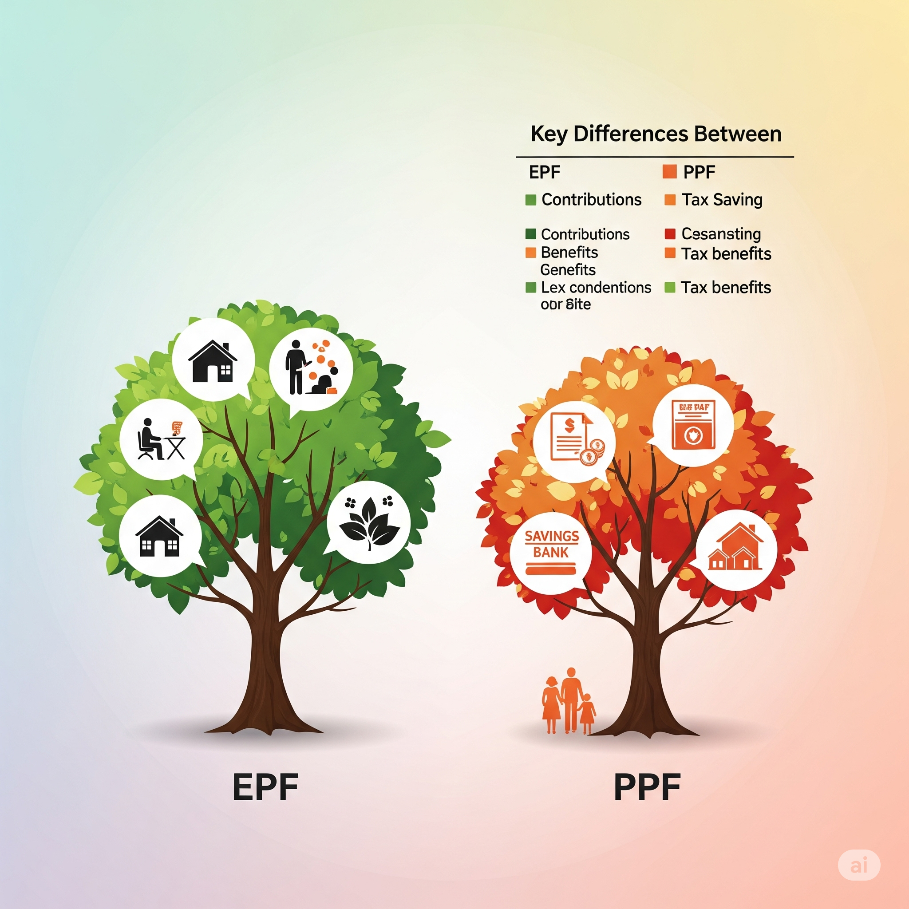
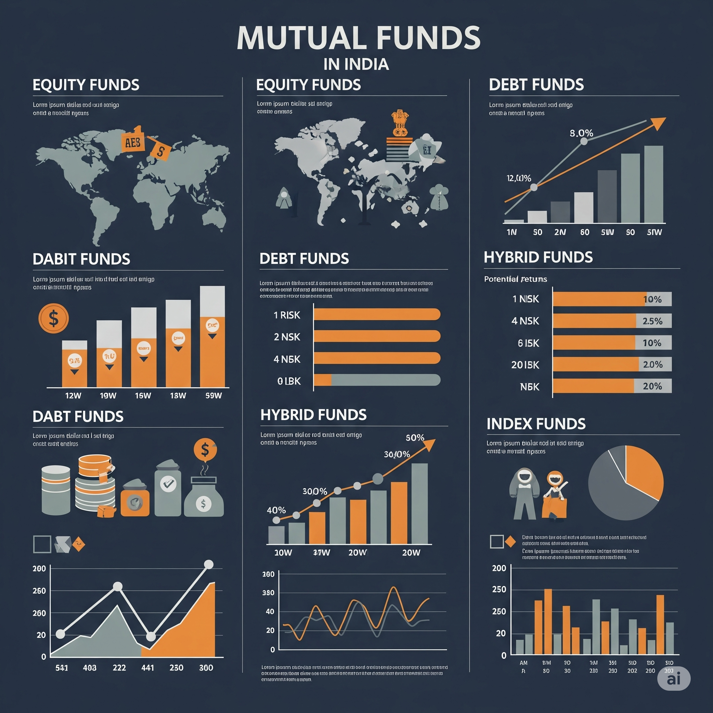

Perpetual BONDs – should you invest?
May 7, 2023 : 10:12 PM
Perpetual bonds are commonly issued by banks to the
retail investors. These are the bonds that given a higher interest rate that the bank FD (in
the same bank). The perpetual bonds are mostly sold to people who seek regular income and
the retired people are a soft target for this product.
Since most common people are “financially illiterate”
they fall prey to the bold titles showing higher interest rate. They do little research and
are rarely aware of the risks involved in such investments, especially from the bad banks.
Let us first see what is a perpetual bond. A perpetual
bond, also know as “consol” bond or “prep” is a fixed income instrument with no maturity
date. What this means is that you invest your money in this bond and keep receiving interest
perpetually. This also means, these bonds are non-redeemable. These bonds are often viewed
as equity rather than debt. However the interest paid on the perpetual bond is taxable as
per your existing tax bracket.
Few risks in perpetual bonds that you need to understand
–
Default risk –Unlike FDs where the RBI
gives a guarantee up to 5 lakhs (FD insurance – watch delayed video
–https://www.youtube.com/watch?v=DaabIzwy_PM) -the perpetual bonds have no guarantees even
though issued by the banks. These bonds are typically issued to shore up the capital of the
banks. If the banks capital drops below certain threshold levels because of NPAs or
anything, the banks are free to skip interest payment to the investors or even write-down
their value (this is what YES bank did recently) In the recent case of YES bank, the
perpetual bonds holders were given last priority treatment. There is a high concentration
risk involved as you are investing full capital of Rs. 10L or more in single instrument (if
you invested the same money in debt funds or low risk equity funds, you get the advantage of
diversification).
Repayment Risk –Perpetual bonds are
often marketed as having 5 or 10 year tenor. However, the financially illiterate investors
are often oblivious to the fact that the maturity of the bond is the banks right to pay the
principal. The investor is rarely made aware of the fact that the bank is not bound to pay
back the capital to the investors (hence the name perpetual) and it may chose not top pay
back the capital and keep paying the interest. In fact the banks can even skip the interest
payment and the investor cannot do much. The banks even write-down the value of the bonds as
was seen in case of YES bank. This makes it a investment totally controlled by the bank and
the investors are at the mercy of the bank, always.
Currently most banks are under stress due to the
Covid-19 situation. More than 30% of the loan books of major banks are under moratorium
(where the EMI payments can be halted by the borrowers). If some of these loans go into NPA,
they can wipe out a lot of perpetual bonds.
Liquidity Risk –If you have an
emergency in your life or need the money for some major expense, you will have to sell your
perpetual bond in the open market. However, in India the corporate bond market is very thin
and bonds are often illiquid due to this low demand. You may not get a buyer when you want
it badly (just like in real estate). This lack of liquidity is what forced the Franklin fund
house to close its 6 debt schemes in April 2020. As against this the banks FDs are fully
liquid and the debt funds too remain extremely liquid even after the Franklin fiasco last
year.
Inflation Risk –The inflation risk is
highest in long tenor bonds like perpetual bonds. It is the risk where the inflation rate is
very close to or higher than your bond yield. In this case you do not actually make money on
your investment any longer.
Interest Rate Risk –When inflation
rises, interest rates rise too. If interest rates increase, bond prices fall. This effect is
particularly harmful for long tenor bonds like perpetual bonds. A drop in bond price will
hurt badly if you want to prematurely exit. You may get lower price than your investment in
such a emergency exit – provided you get a buyer though.
Conclusion –Higher interest rate is
always a bait for the uninformed investors. Most retail investors make a mistake of assuming
all debt investments as safe and fall prey to the marketing gimmicks by the banks. However,
you must think clearly and study all risks before you invest your hard earned money in such
perpetual bonds – especially when they are offered as very safe investments by the banks.
When it comes to investing in debt, the first priority must be given to liquidity and safety
and last priority to returns. A slightly higher rate of interest (especially when the same
bank offers low interest on FDs) and be a BIG risk on your capital. Beware, educate and
choose wisely.
Posted by: Samir Machawe

Understanding EPF & PPF
May 7, 2023 : 10:14 PM
There are more than 6 crore members contributing to the
Employee Provident Fund as per the most recent data on the EPFO website. These are primarily
the people employed in the organized sector in our country. The Employee Provident Fund is
basically a retirement benefit scheme designed by the government for the salaried employees.
This is a compulsory deduction from the salary and the government understands that people
may not invest for their retirement at all if it is not made mandatory.
- • The employee and the employer make an equal
contribution of 12% of the employee’s salary every month. The employee however has an
option to increase his monthly contribution voluntarily. Out of the 12% contribution by
the employer, 3.67% goes to the EPF account and 8.33% to the Employees’ Pension Scheme
EPS. This part does not earn any interest and cannot be withdrawn. It is paid out as
pension after retirement.
- • The EPF contribution earns a fixed rate of
interest announced by the government from time to time. Currently this is 8.50%.
- • The best thing about EPF is that the total amount
accumulated as well as the interest earned is completely tax free when the employee
withdraws this amount at retirement. However, if the amount is withdrawn before
completing 5 years of employment, it is taxable.
- • There are some conditions under which premature
withdrawal is allowed. One way is to take a loan on the EPF amount. Withdrawal is
allowed for daughters marriage or building your own house. In case the person is
unemployed, he can withdraw 75% amount after 1 month and remaining 25% after 3 months.
- • The EPF account becomes dormant and inactive if
no contributions are not made for a continuous period of 3 years. Interest is offered
for inactive accounts of people who have not attended retirement age of 60, but no
interest is offered for members above 60 years of age. However, the interest paid on an
inactive account is taxable just like that on a regular bank FD.
- • The amount contributed to EPF gives you a tax
benefit under Section 80C if the income tax act.
Now let’s look at PPF – Public Provident Fund – this is
yet another long term investment asset managed by the government of India. Any person can
open a PPF account usually through a bank or a post office. It is not mandatory that you
need to be employed to open this account unlike than in case of EPF.
- • PPF is a long term investment option available
for investors who wish to keep their capital safe, earn a good rate of interest which is
pretty stable too.
- • PPF is well suited for the low risk investor and
it is backed up by the guaranteed returns by the Government of India
- • Let us look at some features of the PPF account
- • PPF investment comes with a lock in period of 15
years and one cannot withdraw the money completely before the end of 15 years. The
investor can extend the investment period by another 5 years by choice.
- • A minimum contribution of Rs. 500 and a maximum
contribution of Rs. 1,50,000 can be made in a single financial year. It can be invested
in lump sum or a maximum of 12 instalments in a year. Investing every year is mandatory
to keep the account live.
- • One can take loan against the investment in PPF.
Loan is available from start of 3rd year till end of 6th year from opening of the
account. Loan amount is maximum 25% of the amount balance in the end of first year –
that is 25% of 1.50L = 37500
- • After 6th year, you are allowed to make 1
withdrawal in any 1 year. The limit for withdrawal is 50% of balance at end of 4th year
preceding the year in which you want to withdraw or immediate preceding year, whichever
is lower.
- •If you extend your account beyond 15 years, a
partial withdrawal of 60% of the balance at end of 15 years
- • People you are ready to keep their money locked
in
for 15 years and do not want to take any risk will find investing in PPF a good option.
- •There was a time when PPF used to give a 12%
interest. However, currently it gives an interest of 7.1%, with the interest rate
consistently decreasing over the years.
Conclusion –
EPF is a better option than PPF as far as returns are
concerned. Most people use PPF for tax saving but there are better options available which
we shall see in some future post.
https://www.youtube.com/watch?v=_1DmAGmTb7g
Posted by: Samir Machawe

Take charge of your financial life
May 7, 2023
- 01. SAVING WILL NOT MAKE YOU WEALTHY
- Unless you are saving a few lakh rupees every month you will not become
wealthy by just saving some money. You need to use that money in a better way to convert
it into wealth. Having cash is good as a contingency fund – something happens to your
regular income – like you lose your job or something, it is good to have between 6 to 12
months of savings in cash – this will help your survive the bad patch. Cash will also
help you encash an opportunity. Having cash will help you grab a opportunity like a
business or help you negotiate something in your favor.
- 02. BEING WEALTHY IS NOT ABOUT SHOWING OFF
- If you have a lot of wealth, it does not mean you will have to own a big
house or a luxury car. Being wealthy is about having assets. Assets are things like
business or investment that bring additional cash flow or interest to your income or
which appreciate in value beating the inflation. Showing off can lead you to acquiring
things like cars that actually drain your pockets. Owning a big house just to look rich
can cause you to pay a major portion of your income into EMI payments for decades. One
of the classical definitions of being wealthy is how many days can you survive if your
income stopped tomorrow. The longer you can live, the wealthier you are.
- 03. UNDERSTAND TAX - Many people
worry too much about taxes. There is more fear rather than understanding about taxes.
Instead of making taxes work in their favor people are busy finding ways to avoid them.
To master money, you have to use taxes for your benefit and not against you. Find out
how you get tax breaks so that you can save money, invest it and save even more taxes.
Learn to use taxes so that you keep more money in your pocket legally.
- 04.LEARN HOW TO USE OTHER PEOPLE’S MONEY
- Many people are so terrified of using loans, that they use their own
money for everything they do including business. Loans maybe good or bad based on how
you use them. For example, if you had a housing loan and wanted to get an education loan
for your kid, it will make more sense to use a top up loan on the existing housing loan
as it will be at least 1.5% cheaper. Or most people do not know that by investing
properly you can actually reduce the interest on your housing loan by 50% or more.
- 05.EARN MORE AND SPEND LESS - We
need to focus on both at the same time. Make yourself an asset in your job or your
business, upgrade your abilities continuously and strive to become a better person every
day. This way you increase your chances of earning more. As your income goes up, keep
your expenses low. Most people find this difficult to do and end up increasing their
expenses in proportion to their incomes.
- 06.KEEP TRACK OF YOUR CASH FLOW -
Most people are good at making money but struggle with keeping the money in their
pockets. The reason for this is not knowing their cash flow. Most people only have a
faint idea about how much are their expenses. Less than 10% of people actually record
their expenses on a regular basis. Keeping close track of your income and expenses helps
you in avoiding unwanted expenses and provides with the additional money for investing.
- 07.PLAN YOUR RETIREMENT EARLY -
Most people start thinking about planning their retirement only after age 35 and
majority of them keep postponing any serious action way beyond 45. Most people below the
age 30 do not have a slightest idea of how much money it takes to live for 20-25 years
without active income. Hence the best way is to plan your retirement as early as you
can. Because an early start gives you the highest benefit of compounding.
- 08.KEEP YOUR MONEY SAFE - You must
safe guard your hard earned money before you can actually grow it. Most people are in a
hurry to generate return on investment and forget to put a fence around their money.
Look at things that will take BIG money out of your pocket. Things like a major health
issue, accident or theft. You need to protect yourself against such incidents. Another
way is to diversify your investments into multiple assets. This will help you reduce
your losses over multiple market cycles.
- 09.TREAT YOUR MONEY LIKE YOUR EMPLOYEE
- Most people are very serious before they earn money, but lazy after they
have it in their bank. The best way to treat your money is by making it work. Money
doesn’t like to relax. You need to give it work, else it will slowly go away to a better
master. Make sure you engage every single rupee in some kind of investment vehicle at
all times. This way your money will work hard for you.
- 10.SET SOME MONEY RULES THAT WORK FOR YOU
- The nature of money is like water. It keep flowing unless you create
rules or dams to contain it. You need to set basic rules like how much of your income
are you going to spend on cost of living and how much of it are you going to save. Out
of the money you save, you need to set rules as to how much of your savings are for
contingency, how much for long term important goals and how much for fun and enjoyment.
Setting up rules will create a balance in your life.
Posted by: Samir Machawe

Take charge of your financial life
May 7, 2023
Here are the reasons why you need to take charge of your
financial life as early as possible. We have been working in this area of financial
planning, since the year 1999 with our experience of so many years, we have certain
observations about people on how they deal with their financial lives before they come to
us. people are very passive, or casual about their financial management, after they have
earned the money that they wanted to earn.
The second observation is most of our education that we
take, irrespective of whether you are an engineer or a doctor or a business owner, gives us
only one skill. The education is designed in such a way that it gives us a common skill.
That is how to make money, or how to earn money. Unfortunately, our educational system fails
to deal with an abundance of the money cycle, and that is what to do with the money. Once
you have earned it such that you are able to live the life that you love.
The third observation is that most people deal with
their financial management on their own, they follow what we call the to eat yourself method
to deal with their finances, just like when you have a health issue you go to a doctor, or
if you have a legal issue you go to an advocate, you need to go to a financial expert, when
you need to deal with financial management in your life. Unfortunately, in India, just about
3 to 4% of the people, consult a financial expert in view of these three observations.
We are going to now discuss why you need to take charge
of your financial life as early as possible.
- • The first reason why you need to take charge of
your financial life as early as possible, is that the days when the government used to
take care of your old age deeds are gone. There was a time in this country. When once
you took up a job, the government would take care of everything. Till you are alive, but
this is no longer to. It is only you who has to provide for all your financial needs.
Plus, in this age of nuclear families, there is now no guarantee that your children
would be around to support you in your old age. Unfortunately, the truth of life is जबतक
आपके पास पैसे है, लोग पूछेंगे आप कैसे है!! So you need to have money on your side.
- • The second reason why you need to take charge of
your financial life is that this market of financial products is full of sellers.
Everyone is busy selling something to you without any consideration to what you actually
need, or what you actually want these sailors come in every from right from the young
boys and girls that try to sell you the credit card inside the malls while shopping to
the cashiers in the bank, who tried to fool you into buying mutual funds, and our old
friend the insurance agent who is always around the corner and carrying the best policy
in the world, which is closing soon, so he is in a hurry to sell you that policy, the
sellers are often our close acquaintances and avoiding them is a task in itself. It is,
however, in your favour to identify the difference between a seller, and a counselor,
the only agenda that a seller has is to sell his product to you. It doesn’t really
bother. Whether you need it or you don’t need it. However, the agenda of a good
counselor is first to create a tailor made solution for you, that works out for you, or
a period of time. And also, it is his duty to view the freedom to choose which is the
best choice for you.
- • The reason number three is that, because of the
improvement in medical sciences, all of us will most probably live longer than we
imagined. There is a certain pattern that we commonly see in the lives of majority of
the people in the initial years, when people are young, and just begin to earn, they
also take up loans, and end up paying EMI this EMI form a major part of their monthly
outflow this early stage is what we call the EMI and the liquidity crisis, as one
approaches the middle age, the thoughts about promotions, or career progression, start
crowding their minds, the people in this stage, normally would spend more time at their
jobs or take up part time education programs, in order to increase their market value.
This stage is usually followed by an urge of freedom and entrepreneurship.
Unfortunately, the path to successful entrepreneurship is filled with challenges that
one may not be mentally as well as financially, prepared to face.
That is why the failure rate of small businesses is very
high, and at times, scary. This is then followed by the last and final stage of one’s
career. This is the time when people start wondering whether the money they have made so
far, will last them for a lifetime. Maybe the money will last a lifetime. You don’t know for
sure. Unless you have taken some time off. In the early years of your life, and made it a
point to work on this very important area of your life, my observation is most people are so
busy earning the money that they are earning, they hardly have any time left. Look, actively
at their financial management, although most of us realize that active financial management
is an important area. It is never urgent for most of us, it is just that one thing to be
done, sometime in life, however, let me tell you one thing very clearly at this point of
time living with the regret of decisions not made on time is the worst situation, you can
hope for, to get yourself in life, so it is time to stop and think, are you consuming most
of your energy in, earning the money that you earn, who is managing your financial life.
Does he or she have the required expertise, and the experiential knowledge to manage your
money, who will know your financial goals.
Do you have a strategy or a plan on how you’re going to
reach these goals. It is time that you give a hard thought to the fact that what is your
confidence level that you will live an abundant life and the life that you love. I hope that
you realize that taking charge of your financial life is not something to be postponed. It
is a very serious thing, so do it now before it’s too late. If you need any assistance in
dealing with this important area of your life, we add fitness would be more than happy to
serve you. Please write in the comments below, how are you currently managing your financial
life.
Watch in video format
Posted by: Samir Machawe

Five simple ways to utilize Cash Flow
April 25, 2023
Here we will see five simple ways to utilize your extra
cash flow, effectively.
Sometimes we may receive extra cash flow in form of an
increment or a bonus, if you are in a job or in form of extra income, if you are in a
business, most of the times when you anticipate such an excess cash flow coming in, you
already have a plan of how you’re going to use this money, more often than not, this plan is
about how you are going to spend this money, very few people think about investing this
money, less than 5% people actually take action to align this extra cash flow towards their
long term goal. Here are a few tips on how you can use this extra money wisely.
- 1. Create your emergency corpus -
Life has its own emergencies in store for all of us, many such situations need
a lot of money to deal with. Use this extra income to create your emergency fund. This
will help you in two ways. First, when such emergency comes, you will be confident to
deal with it, since you have money on your side. Second, it will save you from asking
for money from friends and relatives or taking unnecessary loans.
- 2. Invest this extra money - Money
that you might have received for your children’s education. If you have already
identified the children’s education goals, then it is better to give priority to such
extra cash flow and follow a structure. If you haven’t already quantified your goals. It
is time you got in touch with finance consulting. If you need any assistance in planning
out and taking control of your financial life contact us.
- 3. Invest extra money for your retirement
savings - Most people think of their retirement eight or 10 years before
they actually retire. This could be very late. Think about retirement and effectively
plan for it. Hence, make it a point that you start planning for your retirement, as
early as possible, so that you have enough time to plan for it very well. Use any such
extra cash flow for your investments earmarked for your retirement. Never let any such
extra cash flow run out of your pocket as money for enjoyment, it is always better to
utilize this money judiciously and investigate for your long term goals.
- 4. To pay off any higher interest rates -
Things like credit card debt or personal loan, which are charged, very high
interest rate must be on your priority to finish them off. So make sure that you pay off
all set higher dates, whenever you get an extra cash flow. But Don’t be in a hurry to
finish off that housing loan, unless you are charged the interest in excess of 12%. If
you want to know how you can actually reduce the interest of a housing loan do get in
touch with us. If you have just begun your housing, a few months back, we can help you
to reduce that housing loan to a. interest rate of just 2%, or even less than that.
- 5. To buy some special insurance -
There are some insurances like the hardened cancer policy, or the critical
insurance policy that one men need when the time arises, so use this extra money to get
yourself covered under such special insurance policies, because they are going to be
very useful. If the need comes and will save you a lot of hard earned money. In the end,
I would like you to note that always use any such extra cash flow to invest for the long
term. Instead of spending it on things that give you temporary happiness, like buying
things that you don’t actually need, but you want to have them almost every time it is
delayed gratification, that helps you in creating a financially stable life.
Watch in video format
Posted by: Samir Machawe

Most middle class families struggle
April 25, 2023
Most middle class families struggle to make the ends
meet. This is true primarily as they are unable to manage their cash flow efficiently. Most
have limited incomes and higher expenses. Consequently they are stressed out and may
actually be leading a below par life.
In order to have better control of their finances, it is
recommended they avoid following mistakes consciously!
- 1. Emotional buying and not bargaining
enough -
- Many times people feel it below their dignity to
bargain. This is true especially in today’s world where mall culture is around. However,
the same people could many times be seen bargain hunting on online eCommerce sites like
Amazon etc.
- It is recommended to make bargaining a good habit
as there is no loss whatsoever. Little savings from small bargains go a long way in
saving money.
- Emotional buying is one thing which everyone must
avoid. It not only creates financial pressure, but also creates a feeling of guilt, once
the craving for buying subsides. This is not a good emotional state to be in.
- Better practice asking yourself “do I want this or
do I really need this” before making any buying decision. And postpone all “wants” as
long as you can. Most “good to have things” in life are responsible for financial
stress.
- 2. Doing major expenses before time -
- Many middle class families end up making major
purchases like house or car much before they can really afford them. Most of the times
this is done under social pressure to “look good”.
- Major spending early in life puts the family in a
financially downward spiral as expenses increase and there is no money to invest.
- Bigger expenses, typically more than your annual
income must be avoided unless they are properly planned and provided for with enough
back up.
- 3. Not having enough insurance -
- When it comes to buying adequate insurance, most
middle class families act penny wise pound foolish. They think insurance premium is
un-affordable or an unnecessary expense. However, this attitude makes them vulnerable to
major financial emergencies like a major medical treatment or untimely death of an
earning member in the family. One such incident completely shatters the family
financially.
- Hence it is recommended to acquire adequate
insurance after understanding what risks need to be covered. This will help equip the
family to deal with any unforeseen events and financial emergencies.
- 4. Not developing multiple sources of
income -
- Most middle class people are stuck with a single
source of income. Even if there are more than one earning members in the family, more
often then not, their cumulative income is just enough to make the ends meet.
- Due to this problem of “not enough money” they end
up creating debt or borrowings, leading to compulsory EMI payments.
- It is recommended to be on look out for
opportunities of making some extra buck. A part time business or something where their
existing skills can be monetized must be considered to ease the financial demand.
- 5. Wrong choice of assets -
- Most middle class families who struggle financially
do so due to lack of financial education. They may be word literate, but financial
literacy is a rare commodity. Due to this, security is often the most important thing
when it comes to money.
- Since they operate primarily from the fear of
losing money, they end up parking their money in wrong assets. For most people their
money is either in the bank or in low return assets like FDs or PPF. They may also be
very inefficient in their tax saving investments, with most people using life insurance
and PPF.
- It is recommended to take professional help when it
comes to investing and asset selection, as one may not be equipped to deal with these
matters on their own.
- 6. Lack of long term financial planning -
- Unfortunately most middle class families fail to
plan their financial lives. They think seeking professional help for their health is
good, but for their wealth it is un-affordable or not important. In this aspect also,
the “penny wise pound foolish” attitude can be seen commonly.
- It is only through professional financial planning
that one can really experience all that life has to offer. Financial planning helps you
create a meaningful balance in life and achieve your financial goals and dreams.
- If you really care for your family and want them to
have an abundant life, its time you visited Findas office. Here we create actionable
financial plans for you to have an access to the life that you love.
Posted by: Samir Machawe

History of Mutual Funds in India
May 7, 2023
Mutual funds have become one of the most popular
investment vehicles in India in recent years. They offer an opportunity for retail investors
to pool their money together and invest in a diversified portfolio of stocks, bonds, and
other securities. In this article, we will take a brief look at the history of mutual funds
in India, how they have evolved over the years, and their current status in the Indian
market.
The concept of mutual funds first originated in the
Netherlands in the 18th century, when a group of investors formed a trust to invest in
stocks and shares. The concept then spread to other countries, including the United States,
where the first modern mutual fund was established in 1924. However, it wasn't until the
mid-1960s that mutual funds were introduced in India.
The first mutual fund in India was set up by the Unit
Trust of India (UTI) in 1963. The government of India set up UTI with the aim of mobilizing
savings from small investors and channeling them into the capital market. The first scheme
launched by UTI was the Unit Scheme 1964, which offered investors the opportunity to invest
in a diversified portfolio of stocks.
In the early years, UTI was the only player in the
mutual fund market in India. However, in the late 1980s, the government of India opened up
the mutual fund industry to private sector players. This led to the entry of several private
sector mutual funds, including the likes of HDFC, ICICI Prudential, and the erstwhile
Reliance (now Nippon India). The introduction of private sector players led to increased
competition and innovation in the mutual fund industry. Mutual funds started to offer a
wider range of investment options, including equity funds, debt funds, and hybrid funds.
They also introduced new investment strategies, such as index funds and exchange-traded
funds (ETFs).
In the late 1990s and early 2000s, the Indian economy
saw a period of rapid growth, which led to a surge in the mutual fund industry. The number
of mutual funds and the assets under management (AUM) grew rapidly during this period.
The Securities and Exchange Board of India (SEBI), the
regulator for the securities market in India, took several steps to improve the regulation
of the mutual fund industry. SEBI introduced several measures to protect the interests of
investors, including stricter disclosure norms, enhanced transparency, and the requirement
for mutual funds to disclose their portfolio holdings on a regular basis.
In recent years, the mutual fund industry in India has
continued to grow, albeit at a slower pace than in the past. As of March 2023, the total AUM
of the mutual fund industry in India was Rs 39.42 lakh crore ($482 billion), up from Rs
37.56 lakh crore ($459 billion) in March 2022.
The AUM of the Indian MF Industry has grown from ₹ 7.01
trillion as on March 31, 2013 to ₹39.42 trillion as on March 31, 2023 more than 5 fold
increase in a span of 10 years.
The Indian mutual fund industry has also seen some
interesting trends in recent years. One trend is the growing popularity of Systematic
Investment Plan, the SIP. As on 31 Mar 23, all Indian investors put together have 6.36 crore
SIP accounts. Rs. 14276 crores were collected through SIP in March 2023 alone.
As more and more Indians prefer to invest their money
through mutual funds, the SIP collection grew from Rs. 43921 crores in FY 2016-17 to Rs.
1,55,972 crores in FY 2022-23. This is a growth of 23.52% CAGR.
The mutual fund industry in India has come a long way
since the introduction of the first scheme by UTI in 1964. Today, it is a well-regulated and
thriving industry.
Posted by: Samir Machawe

Weekly stock recommendation
April 25, 2023
- Findas Stock Recommendation
- Buy Sharda Corpchem For The Short Term
- CMP - 497
- FUNDAMENTAL ANALYSIS
- The company has reduced debt and is almost debt
free. At current price its PE is 13.12, relatively cheap compared to peers Compounded
Sales Growth (10 years) 18% Compounded Profit Growth (10 years) 15% ROCE (Mar 23) 21%
Promotor Holding 74.82%.
- TECHNICAL ANALYSIS
- Stock is currently trading close to its 200 DMA. It
looks well poised for a breakout with upward targets of 530/575/650/Higher. If the stock
closes below 415, you can exit.
Posted by: Samir Machawe

The positive and negative implications
May 23, 2023
The positive and negative implications of the RBI's
decision to stop the use of Rs. 2000 notes in India.
- Positive Implications
- The RBI's decision to stop the use of Rs. 2000
notes has a number of positive implications. First, it will make it more difficult for
criminals to use cash for illegal activities. Second, it will help to reduce the amount
of counterfeit currency in circulation. Third, it will make it easier for the government
to track and monitor cash transactions. Fourth, it will help to promote digital
payments, which are more efficient and secure.
- Negative Implications
- The RBI's decision to stop the use of Rs. 2000
notes also has a number of negative implications. First, it will inconvenience people
who still use cash for everyday transactions. Second, it could lead to a rise in prices,
as businesses pass on the costs of complying with the new regulations to consumers.
Third, it could make it more difficult for people to access financial services, as some
banks may be reluctant to serve customers who do not have a bank account.
- Multiple Points of View
- There are a number of different points of view on
the RBI's decision to stop the use of Rs. 2000 notes. Some people believe that it is a
necessary step to combat crime and corruption. Others believe that it is an unnecessary
inconvenience that will hurt the poor and the vulnerable. Still others believe that it
is a step towards the introduction of a central bank digital currency (CBDC).
- Possible Future Scenarios
- It is difficult to say what the long-term
implications of the RBI's decision to stop the use of Rs. 2000 notes will be. However,
it is possible that it will lead to a number of changes in the way that people use and
manage their money. For example, it could lead to a rise in the use of digital payments,
as people look for more convenient and secure ways to pay for goods and services. It
could also lead to a change in the way that businesses operate, as they adapt to the new
regulations.
- Is this a Step Closer to the Advent of CBDC
in India?
- It is possible that the RBI's decision to stop the
use of Rs. 2000 notes is a step closer to the introduction of a CBDC in India. A CBDC is
a digital currency that is issued by a central bank. It is similar to cash, but it can
be used online and in stores. The introduction of a CBDC could have a number of
benefits, including reducing the cost of cash transactions, making it easier for people
to access financial services, and improving the efficiency of the payments system.
- However, there are also a number of risks
associated with the introduction of a CBDC, including the potential for cyber-attacks
and the possibility that it could be used for illegal activities. The RBI will need to
carefully consider these risks before deciding whether or not to introduce a CBDC in
India.
- Overall, the RBI's decision to stop the use of Rs.
2000 notes is a significant development that has the potential to have a major impact on
the Indian economy. It is too early to say what the long-term implications of this
decision will be, but it is clear that it is a move that will have far-reaching
consequences.
Posted by: Samir Machawe

10 simple ways to save money for below 25 year people
May 29, 2023
As a young person below the age of 25, saving money is
not anyones priority. You're likely focused on building your career. However, starting to
save money at a young age can have huge benefits in the future. So, we will discuss 10 ways
to save money for young people below 25.
- 01. Create a budget
- The first step to saving money is to create a
budget. This will help you track your spending and identify areas where you can cut
back. You can use a spreadsheet or a budgeting app to create your budget.
- 02. Cut back on unnecessary
expenses
- Look at your budget and identify areas where you
can cut back on unnecessary expenses. For example, you could reduce your cable TV
package or cut back on eating out. It means you must find out various ways to cut
spendings. One of the gteastest contributors to overspending is a credit card.
- 03. Record your Expenses
- The very important step to save money is figuring
out how much you spend. You must record each and every rupee you have spent.
- 04. Save on transportation
- Try to use public transport to save expenses on
petrol . It also saves your time. Carpooling is also the best option to save money. You
can walk or use two wheeler if the distance is short enough.
- 05. Find free entertainments
- You don't need to spend a lot of money to have fun.
Look for free entertainment options, such as visiting a museum on a free admission day,
going for a hike, or hosting a game night with friends.
- 06. Cook at home
- Cooking at home is much cheaper than eating out.
Plan your meals for the week and buy groceries in bulk to save even more money. Also
prepare for grocery shopping in advance.
- 07. Use student discounts
- If you're a student, take advantage of student
discounts. Many retailers and service providers offer discounts to students, so be sure
to ask.
- 08. Start earning side income
- Consider starting a side hustle to earn extra
money. This could be anything from freelancing to selling items online. Sharing food
photos on instagram and various social media tools.
- 09. Avoid debt
- Avoiding debt is one of the best ways to save
money. If you do need to borrow money, make sure you can pay it back on time to avoid
interest charges.
- 10. Save for emergencies
- Finally, make sure you have an emergency fund. This
should be enough money to cover at least three to six months of expenses in case of an
emergency.
- In conclusion, saving money can be challenging, but
it's worth the effort. By following these 10 tips, you can start building your savings
at a young age and set yourself up for financial success in the future. Remember, every
little bit helps, so start small and work your way up.
Posted by: Samir Machawe

Financial Freedom Thru Frugality
June 04, 2023
The five steps to adopting a frugal lifestyle that can
help anyone achieve financial freedom within 10-15 years:
- 01. Create a Budget and Track
Expenses
- Start by creating a detailed budget that outlines
your income and expenses. Track your spending to identify areas where you can cut back
and save. Keep track of your expenses daily. Nowadays simple mobile app will help you do
this very easily. You just need the discipline to enter data daily. By understanding
your financial situation and being mindful of your expenses, you can prioritize saving
and direct your money towards achieving your long-term financial goals.
- 02. Embrace Minimalism and Prioritize Needs
over Wants
- Adopting a minimalist mindset can be powerful in
cultivating a frugal lifestyle. Differentiate between needs and wants, and focus on
meeting your essential needs while minimizing unnecessary expenses. Prioritize
experiences, relationships, and personal growth over material possessions, which often
come with ongoing costs and maintenance. With so many offers to shop continuously, this
is probably the most valued skill for your wealth creation.
- 03. Reduce Debt and Avoid New Debt
- Debt can hinder your progress towards financial
freedom. Make a plan to reduce and eliminate high-interest debt, such as credit card
debt, as quickly as possible. Avoid taking on new debt unless it's for appreciating
assets. By reducing debt, you free up more income to save and invest for your future.
For most people, the home loan debt forms around 25% to 35% of their income and is one
major reason why they never manage to get rich in life.
- 04. Cut Expenses and Find Ways to
Save
- Review your regular expenses and find areas where
you can cut back. Look for opportunities to save on utilities, transportation,
groceries, and entertainment. Consider negotiating better deals on services, buying in
bulk, or using coupons and discounts. Small savings can add up significantly over time.
It is observed that most people manage their jobs or businesses very professionally, but
when it comes to managing their own money, they lack the professionalism and rigor.
- 05. Save and Invest for the Future
- Once you have reduced expenses and freed up some
income, save and invest for your future. Create an emergency fund to cover unexpected
expenses, and then focus on long-term savings and investments. Explore low-cost
investment options such as mutual funds that provide diversification and long-term
growth potential.
- In India, mutual funds have been around for over 59
years now and have delivered a CAGR of 15% plus. Still less than 4% of the population
invests in them. The primary reason being lack of knowledge. People carry a number of
myths about mutual funds, that keep them away of one of the best investment assets. In
order to increase the awareness about mutual fund investing I am offering you a FREE
E-BOOK, named 25 Myths of mutual fund investing. Click on the link below to get your
free e-book, and start investing in mutual funds today.
- Remember, achieving financial freedom is a
long-term journey that requires discipline and consistency. By adopting these steps and
consistently following a frugal lifestyle, you can make significant progress toward your
financial goals within 10-15 years. It's important to review and adjust your plan
periodically based on changing circumstances and priorities.
- https://tinyurl.com/25MYTHSebook
Posted by: Samir Machawe

Embracing Simplicity for Financial Freedom
June 04 , 2023
- Introduction:
- In a world of material excess and constant
consumerism, the concept of minimalism offers a refreshing alternative. Embracing a
minimalist lifestyle entails living with less, reducing clutter, and prioritizing
experiences over material possessions. Beyond its aesthetic appeal, minimalism can be a
powerful tool for achieving financial freedom. By making conscious choices about what we
truly value, we can break free from the cycle of consumerism and create a life of
financial stability and peace.
- Living with Less:
- Minimalism encourages individuals to declutter
their lives, both physically and mentally. By eliminating unnecessary possessions, we
gain a clearer perspective on what truly matters to us. Instead of accumulating material
items that often lose their value over time, minimalists focus on quality rather than
quantity. This deliberate choice to live with less not only saves money in the long run,
but it also reduces the burden of constantly maintaining and organizing excessive
belongings.
- Reducing Financial Stress:
- Adopting a minimalist lifestyle can alleviate
financial stress. When we reduce our expenses and prioritize our needs over our wants,
we create a sense of financial stability. By living within our means and avoiding
unnecessary debt, we can build a solid foundation for our financial future. The
financial freedom gained through minimalism provides the opportunity to save, invest,
and pursue our passions without the constant worry of financial constraints.
- Prioritizing Experiences:
- Minimalism encourages us to shift our focus from
accumulating possessions to cherishing experiences. Rather than chasing the latest
gadgets or designer labels, minimalists invest their time and resources in creating
memories and pursuing meaningful relationships. By prioritizing experiences over
material possessions, we find greater joy and fulfillment in the intangible aspects of
life. This shift not only reduces our financial burden but also enriches our lives with
moments that hold lasting value.
- Conclusion:
- The minimalist lifestyle offers a path to financial
freedom by embracing simplicity and prioritizing what truly matters. By consciously
living with less, reducing clutter, and valuing experiences over material possessions,
we free ourselves from the pressure of consumerism and achieve a sense of contentment
and financial stability. Adopting a minimalist mindset allows us to live within our
means, reduce financial stress, and focus on building a life of purpose and fulfillment.
Embracing minimalism is not just about decluttering our homes; it is about freeing
ourselves from the endless pursuit of material possessions and embracing a simpler,more
meaningful existence.
Posted by: Samir Machawe

Embracing Simplicity for Financial Freedom
June 04 , 2023
- Introduction:
- An emergency fund is like a financial safety net,
providing a cushion for unexpected expenses that can arise at any time. In this
comprehensive guide, we will explore the significance of having an emergency fund, why
it's crucial for financial stability, and practical steps to start, grow, and maintain
this essential fund.
- What is an Emergency Fund?:
- An emergency fund is a pool of money set aside to
cover unforeseen financial emergencies or unexpected expenses without derailing your
long-term financial goals.
- The Benefits of Having an Emergency
Fund:
- • Provides peace of mind
- • Helps maintain financial stability
- • Reduces the need for high-interest borrowing in
emergencies
- Common Misconceptions about Emergency
Funds:
- • Only for major emergencies
- • Not necessary if you have insurance
- • Can wait until later to start building
- Why Building an Emergency Fund is
Crucial:
- Building an emergency fund is essential for various
reasons
- Financial Stability:
- Having an emergency fund ensures that you can cover
unforeseen expenses without dipping into your savings or going into debt.
- Peace of Mind:
- Knowing that you have a financial buffer in place
can alleviate stress and anxiety during unexpected situations.
- Protection Against Unexpected
Expenses:
- From car repairs to medical bills, unexpected
expenses can arise at any time. An emergency fund acts as a safety net to address these
financial needs.
- How to Start Building an Emergency
Fund
- Starting to build an emergency fund is a crucial
step towards financial preparedness
- Setting Realistic Savings Goals:
- Calculate your monthly expenses and aim to save at
least 3-6 months' worth to cover essential costs in case of emergencies. Later on, as a
second step you must try to build this to 12 months of expenses.
- Creating a Budget:
- Track your income and expenses to identify areas
where you can cut back and allocate more towards your emergency fund.
- Regular Reviews:
- Set up a regular review process (typically every
month) to check the balance in your emergency fund. Add money whenever the balance drops
below the threshold level. This practice ensures you have no emergency in the emergency
fund.
- Strategies for Growing Your Emergency
Fund:
- Growing your emergency fund requires strategic
planning and financial discipline
- Cutting Expenses:
- Look for ways to reduce discretionary spending and
redirect those funds towards your emergency fund.
- Increasing Income:
- Consider taking on a side hustle or freelance work
to boost your income and accelerate your emergency fund savings.
- Investing for Long-Term Growth:
- Once your emergency fund reaches a comfortable
level, explore investment options that offer potential long-term growth while
maintaining liquidity.
- Maintaining Your Emergency Fund:
- Maintaining your emergency fund involves regular
assessment and adjustments:
- Reassessing Your Savings Goals:
- As your financial situation changes, revisit your
savings goals to ensure they align with your current needs and circumstances.
- Using Your Emergency Fund Wisely:
- Reserve your emergency fund for true financial
emergencies, such as medical expenses, job loss, or unexpected home repairs.
- Adjusting to Life Changes:
- Life events like getting married, having children,
or buying a home may impact your emergency fund needs. Adjust your savings strategy
accordingly.
- Conclusion
- In conclusion, having an emergency fund is a
cornerstone of financial preparedness. Start building or growing your emergency fund
today to safeguard your financial future and stay resilient in the face of unexpected
challenges.
- FAQs
- 1. How much should I aim to save in my emergency
fund?
- Ideally, aim to save at least 3-6 months' worth of
living expenses in your emergency fund.
- 2. What qualifies as an emergency when using the
fund?
- True emergencies include situations like medical
emergencies, job loss, necessary home repairs, or unexpected car repairs.
- 3. Can I use my emergency fund for non-financial
emergencies?
- It's recommended to use your emergency fund
strictly for financial emergencies to ensure its availability when needed most.
Posted by: Samir Machawe